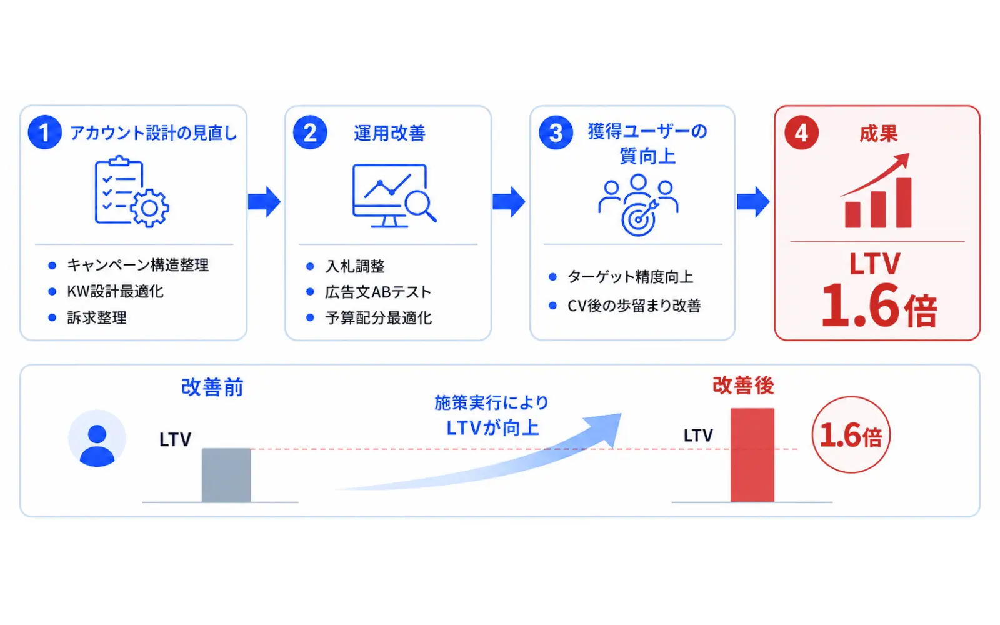

この記事でわかること
- 問い合わせが成約しないときの4つの型と、それぞれの見分け方
- 過去の問い合わせを1件ずつ振り返る「問い合わせ台帳」の作り方と、流入元別の成約率の出し方
- サイト・広告側で直すことと、問い合わせ後の対応で直すことの分け方
- 「価格で折り合わない」が多いときの考え方と、成約率が上がらないときの判断の目安
ホームページを作り直したり広告を始めたりして、問い合わせは来るようになった。ところが、話を聞くと予算が合わない、相見積もりの1社として比べられて終わる、返信しても連絡がつかない。結果として、問い合わせの数ほど売上が増えない。中小企業のWeb集客で、とてもよく聞く悩みです。この記事では、成約しない問い合わせを型に分け、どこから見直せばよいかを順番に整理します。
結論：問い合わせが来るのに成約しない原因は、対象外の人が来ている、相見積もりの比較用として使われている、まだ情報収集の段階の人が多い、問い合わせ後の対応で取りこぼしているの4つの型に分けられます。まず過去3〜6か月の問い合わせを1件ずつ、流入元・内容・初回の返信までの時間・結果・失注理由で表にしてください。どの型が多いかで、直すべき場所がサイト・広告側なのか、問い合わせ後の対応なのかが決まります。
成約しない問い合わせの4つの型
成約しない問い合わせは、ひとまとめに「質が悪い」と片づけられがちです。しかし中身を見ると、原因の違う4つの型に分かれます。型によって直す場所がまったく違うため、最初に分けて考えることが大切です。
| 型 | よくある様子 | 主な原因 |
|---|---|---|
| 1. 対象外 | 対応していない地域・業種・規模からの問い合わせ。そもそも受けられない | サイトや広告が「誰向けか」を伝えていない、広告の配信や検索語句が広い |
| 2. 比較用 | 見積もりだけ取って返事がない。価格の話だけで終わる | 強みが伝わらず、価格以外で選ぶ理由がない |
| 3. 情報収集段階 | 「まだ検討中」「とりあえず資料がほしい」。時期も予算も決まっていない | 検討の初期の人が問い合わせるしかない作りになっている |
| 4. 対応の取りこぼし | 返信が遅れた、1回連絡して終わった、担当によって対応が違う | 問い合わせ後の対応ルールがない |
中小企業基盤整備機構のJ-Net21に掲載されている相談事例でも、ホームページからの引き合いが成約につながらない原因として、相見積もりの相手探しに使われている、情報収集段階の顧客が多い、閲覧者と狙っているターゲットがずれている、といった点が挙げられています。（出典：ホームページからの引き合いで、受注率を上げる方法を教えてください。｜J-Net21（中小企業基盤整備機構））
1〜3はサイト・広告側の問題、4は問い合わせ後の対応の問題です。実際には複数が混ざっているので、次の手順で「どの型が何割か」を数えます。
自分で確かめる手順：問い合わせ台帳をつくる
感覚ではなく数字で判断するために、過去3〜6か月の問い合わせを1件ずつ表にします。件数が少なくても構いません。むしろ、月に数件から数十件の規模なら、1件ずつ振り返るのが一番確かな方法です。
| 列 | 記入する内容 | この列で分かること |
|---|---|---|
| 受付日 | 問い合わせが来た日 | 時期による偏り |
| 流入元 | 広告・検索（分かれば検索語句）・紹介・SNSなど | どこから来た人が成約しやすいか |
| 入口のページ | 最初に見たページ、または問い合わせたページ | どのページが対象外の人を集めているか |
| 問い合わせの内容 | 相談内容を一言で。予算や時期が書かれていれば記入 | 型1〜3のどれに当たるか |
| 初回返信までの時間 | 受付から最初に連絡するまでの時間 | 型4の取りこぼしがないか |
| 結果と失注理由 | 成約・失注・連絡なし。失注なら理由（価格・時期・他社に決定など） | 何がネックになっているか |
確認の順番
- 手順1：問い合わせのメール・フォームの通知・電話のメモから、過去3〜6か月分を台帳に書き出す
- 手順2：1件ずつ、4つの型のどれに当たるかを付ける（成約したものは「成約」）
- 手順3：流入元ごとに「成約数 ÷ 問い合わせ数」で成約率を出す
- 手順4：失注理由を数え、多い順に並べる
- 手順5：初回返信までの時間と結果を見比べ、遅かったものほど連絡がつかなくなっていないかを確かめる
流入元の記録がない場合は、問い合わせフォームに「何で知りましたか」の選択肢を1つ足すだけでも、次の月から比べられるようになります。台帳には個人の名前や連絡先を書く必要はありません。分析に使う列だけを残し、個人情報は社内のルールに沿って扱ってください。
ポイント：問い合わせ全体の成約率が低くても、流入元別に分けると、成約しやすい入口と、ほとんど成約しない入口がはっきり分かれることがよくあります。直すべきは、成約しない入口のほうです。
サイト・広告側で直すこと
台帳で型1〜3が多かった場合は、問い合わせの「前」に原因があります。問い合わせの数を増やすことより、合わない人が問い合わせる前に気づけるようにすることを優先します。
型1：対象外が多い
「誰向けか」を先に書く
- 対応地域・対象業種・対応できる規模をトップとサービスページの上部に書く
- 対応できないことも明記する
- 広告の配信地域や検索語句を、台帳で成約した人に寄せて絞る
型2：比較用が多い
価格以外で選ぶ理由を見せる
- 品質・納期・対応範囲など、どこが強いかを1つに絞って伝える
- 実績は「誰の、どんな課題を、どう解決したか」まで書く
- 価格の目安を載せ、比べる前提をそろえる
型3：情報収集段階が多い
問い合わせの手前に段階をつくる
- 資料ダウンロードや料金表など、軽い入口を別に用意する
- 検討の初期に知りたい基礎知識をページで答えておく
- フォームで「検討時期」を聞き、対応を分ける
共通
フォームで振り分ける
- 地域・時期・予算感などを選択式で聞く
- 項目は増やしすぎず、判断に必要なものだけにする
- 回答を台帳の列とそろえておく
広告から来る問い合わせの成約率が低い場合は、広告の評価を「問い合わせ件数」ではなく「成約につながった件数」や「売上」で見直すと、配信の組み立て方が変わります。当社でも、件数ではなく期待できる売上を軸に広告の構成を組み替えた事例があります。

この数値は上場人材会社のリスティング広告での結果であり、他の業種・媒体で同じ成果を保証するものではありません。ただ、「件数を増やす」から「成約しやすい人を集める」へ評価の軸を変えると、同じ予算でも結果が変わることを示す一例です。
問い合わせ後の対応で直すこと
台帳で型4が多かった場合や、初回返信が遅いものほど連絡がつかなくなっていた場合は、問い合わせの「後」に原因があります。サイトや広告を直すより先に、対応のルールを決めるほうが早く効きます。
| 見直すこと | 決めておく内容（例） |
|---|---|
| 初回の返信 | 誰が、受付から何時間以内に返すか。休日や不在時は誰が代わるか |
| 最初の連絡で聞くこと | 困っていること、時期、予算感、決める人。毎回同じ項目で聞く |
| 価格の伝え方 | 目安を早めに伝えるか、ヒアリング後に伝えるか。伝える順番をそろえる |
| 連絡がつかないとき | 何日後に、何で、何回まで連絡するか |
| 失注の記録 | 理由を選択肢で残し、月に1回見返す |
営業とマーケティングの担当が分かれている会社では、「どの問い合わせを、いつ、誰が対応するか」の取り決め自体がないこともあります。この取り決めの作り方は営業とマーケティングが噛み合わない会社の直し方｜リード定義・対応ルール・フィードバックの設計で詳しく解説しています。
注意：「質の悪い問い合わせが多い」と感じていても、台帳を作ると返信の遅れや1回きりの連絡で取りこぼしていたと分かることがあります。サイトや広告を大きく変える前に、対応の記録を一度確かめてください。
「価格で折り合わない」が多いときの考え方
失注理由で一番多いのが「価格」という会社は少なくありません。ただ、価格が理由の失注には、2つの違う意味が混ざっています。
- そもそも予算が合わない人が来ている：この場合は、価格の目安や最低料金をサイトに載せることで、問い合わせの前にふるいがかかります。問い合わせの数は減るかもしれませんが、対応の手間が減り、成約率は上がりやすくなります。
- 他社と比べて高いと判断された：この場合は、価格の差を埋める理由が伝わっていない可能性があります。何が含まれていて、他社と何が違うのかを、見積もりと一緒に説明できる資料を用意します。
価格を載せると問い合わせが減るのでは、と心配される方も多いですが、成約しない問い合わせへの対応にかかっている時間を考えると、載せたほうが全体として効率がよくなるケースも多くあります。どちらが合うかは、台帳で「予算が合わない」の割合を見てから決めるのがおすすめです。
それでも成約率が上がらないときの判断の目安
台帳をつけ、サイト・広告と対応の両方を見直した。それでも3か月ほど成約率が変わらない場合は、Web集客の仕組みより手前に原因があるかもしれません。当社では次のように考えています。
- 商品・価格・提供範囲の見直し：失注理由が「価格」「対応範囲」に集中し続けるなら、集客ではなく商品の組み立ての問題です。
- 狙う相手の見直し：成約した人の共通点を台帳から洗い出し、その人たちに絞って発信と広告を組み直します。
- 体制の見直し：対応する人の時間が足りず、返信や追いかけが回らないなら、問い合わせを増やす前に体制を整えるほうが先です。
どこから手をつけるか社内で決めきれない場合は、外部の視点で優先順位を整理するのも1つの方法です。施策の順番の決め方はマーケティング施策の優先順位の決め方でも解説しています。
LnXの見解
「問い合わせは来るのに成約しない」という相談で台帳を一緒に作ると、成約しやすい入口と、ほとんど成約しない入口がはっきり分かれることがよくあります。その差が分かれば、集客の予算をどこに寄せるかは自然に決まります。
もう1つ多いのが、問い合わせ後の対応で取りこぼしているケースです。サイトや広告を作り直すより、返信の時間と追いかけのルールを決めるだけで変わることもあります。問い合わせの数ではなく、成約までの流れ全体を数字で見ることが、遠回りに見えて一番の近道だと考えています。
LnXのマーケティング顧問制度では、問い合わせから成約までの数字の整理と、集客・対応の優先順位づけを一緒に行います。料金はアドバイザリープラン月8万円から（税別想定）、最低契約期間は原則3か月で、1か月目に現状分析と方針設計を行います。広告運用やサイト改修などの実務は別途お見積もりです。
よくある質問
Q問い合わせの成約率はどのくらいが普通ですか？
業種・商材・価格帯によって大きく違うため、一律の目安はありません。他社と比べるより、自社の流入元別の成約率を出し、成約しやすい入口と成約しない入口の差を見るほうが、次に何をすべきかが分かります。
Q問い合わせの数を減らしてでも質を上げたほうがよいのですか？
対応にかかる時間に対して成約が少ないなら、価格の目安や対象を明記して、合わない問い合わせを減らすほうが全体として効率がよくなることが多くあります。ただし、成約数そのものが減っていないかは台帳で必ず確認してください。
Qホームページに料金を載せると、問い合わせが減りませんか？
予算の合わない人からの問い合わせは減る可能性があります。そのぶん、残った問い合わせの成約率は上がりやすくなります。台帳で「予算が合わない」の失注が多い場合は、載せることを検討する価値があります。
Q問い合わせへの返信はどのくらい早いほうがよいですか？
業種によって違いますが、相見積もりで複数社に問い合わせている人は、先に連絡が来た会社と話を進めがちです。まずは自社の台帳で、返信までの時間と成約の関係を確かめ、社内で目標の時間を決めることをおすすめします。
Q台帳をつけるのに、専用のツールは必要ですか？
最初は表計算ソフトで十分です。受付日・流入元・入口のページ・問い合わせの内容・初回返信までの時間・結果と失注理由の6列から始め、件数が増えて管理が大変になってから顧客管理ツールを検討してください。